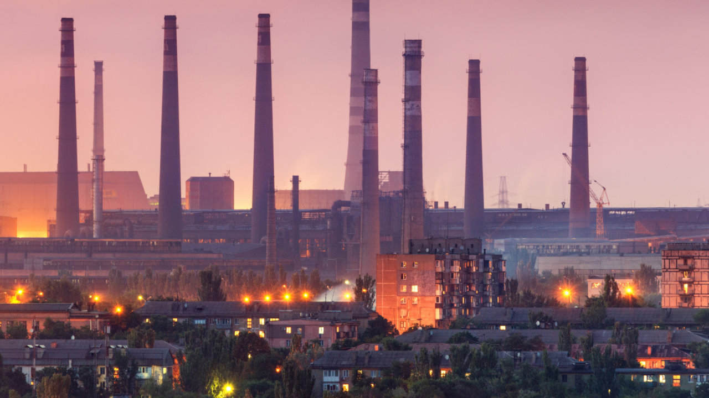

Промисловість — технічно найдосконаліша галузь матеріального виробництва, основа індустріалізації економіки, сукупність підприємств з виробництва електроенергії, знарядь праці для галузей економіки, видобутку сировини, палива, заготівлі лісу, переробки продукції, випущеної промисловістю або виробленої сільським господарством, видобуток і переробка сировини, виробництво товарів і послуг. Промисловість зародилася в рамках натурального домашнього господарства, в якому сировина і добувалася, і перероблялася. Становлення промисловості як самостійної галузі суспільного виробництва пов'язано з процесом відділення ремесла від сільського господарства. Ремесло грало важливу економічну роль в стародавніх державах, а особливо в епоху феодалізму. Перетворення промисловості на особливу галузь суспільної праці в багатьох країнах пов'язане з формуванням феодальних міст, які стали торгово-промисловими центрами великих територій.
Промисловість України
Промисловий комплекс України має потужну матеріально-технічну базу. Вартість основних засобів становить 644 767 млн грн. (на 2007 р.), це майже в 2,3 рази більше, за вартість основних засобів у 2000 р. В комплексі працює більше ніж 3,6 млн працівників, які разом принесли прибуток промисловості у розмірі 43 700,9 млн грн. (2007 р.), що в 5 разів більше, ніж 2001 року. У промисловості переважають третій і четвертий технологічні уклади. Їх частка у промисловому виробництві становить 95 %. Основою цих укладів є металургійна, хімічна, легка промисловість, паливно-енергетичний комплекс, більшість галузей машинобудування. Частка п'ятого і шостого технологічних укладів не перевищує 5 %. Основою цих укладів є електронна промисловість, обчислювальна, волоконно-оптична техніка, програмне забезпечення, телекомунікації, роботобудування, інформаційні послуги, біотехнології. Хоча підприємства промисловості й отримують значні прибутки, але рентабельність продукції за 2003–2010 рр. не перевищує 3-6 %. З 55 тис. промислових підприємств більше ніж 18 тис. (33 %) є збитковими. Ще однією негативною стороною є скорочення кількості найманих працівників у комплексі, за 2001–2007 рр. їх кількість скоротилась на 14 %. Частка експорту промислової продукції у валовому внутрішньому продукті становить близько 40 %, проте його структура незадовільна через переважання сировинної складової, яка перевищує 60 %. Продукція високотехнологічних та наукоємних галузей у загальному обсязі становить лише 15 %. В структурі промисловості України велику питому вагу займають галузі важкої індустрії, особливо машинобудування, чорна металургія та вугільна промисловість. Важка промисловість формує більше ніж 80 % загальної вартості реалізованої продукції промисловості, в тому числі на машинобудування припадає 12-14 %